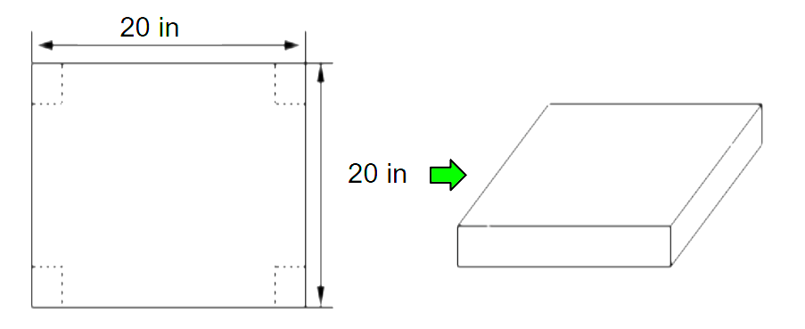

Optimization Problem Continued
Practice Exercise:
We have a piece of cardboard that is 20 inches and we’re going to cut out the corners as shown and fold up the sides to form a box. Determine the height of the box that will give a maximum volume.

To find the height of the box that will give a maximum volume, follow these three steps.
Accordion
Practice on your own first before clicking each step to reveal the answer
Find the First Derivative

Find Critical Points

First Derivative Test

The “box” problem shown, used “optimization” to find the height of the maximum/minimum volume of the cube.
To optimize is to realize the best possible outcome, subject to a set of restrictions.